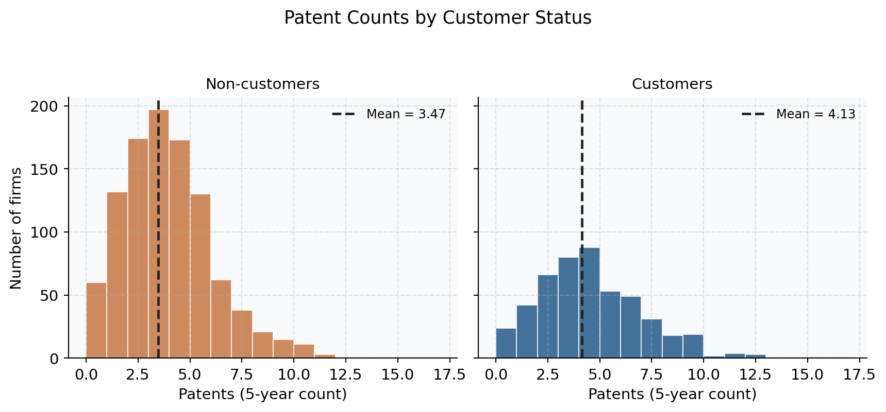
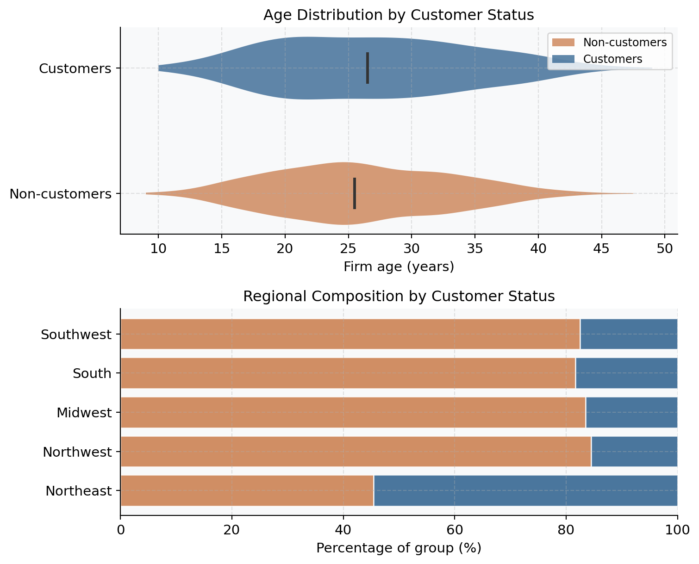
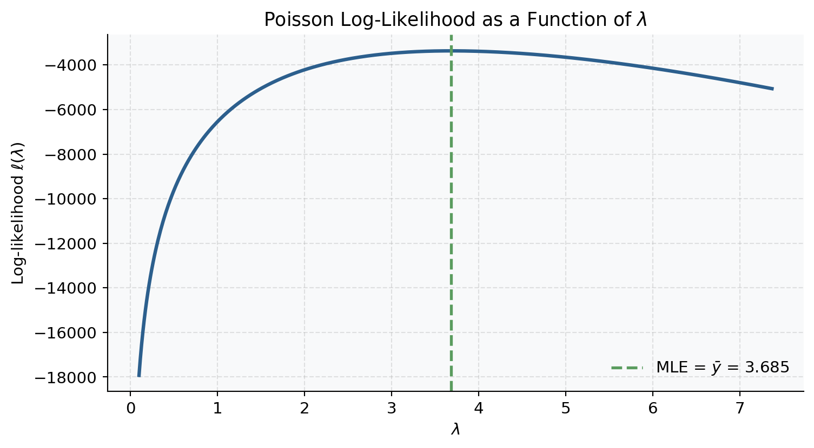
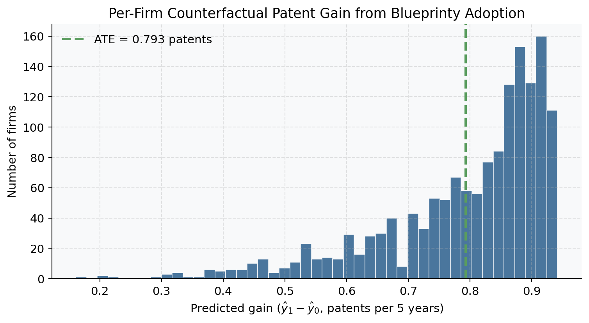

Does Blueprinty’s Software Help Firms Win More Patents?
A Poisson MLE Case Study
Python
MLE
Poisson Regression
Causal Inference
1 / 5
Introduction
Blueprinty is a software company that sells tools specifically designed to help engineering firms prepare patent applications for the US Patent Office. Its marketing team wants to make a compelling claim: firms that use Blueprinty’s software file more successful patent applications. On the surface, the data seem to support this — Blueprinty’s customers average about 4.1 patents over a five-year window, compared to 3.5 patents for non-customers, a gap of roughly 18%. But raw averages can be deeply misleading. Blueprinty’s customers were not assigned to the software at random; they chose to adopt it. If customers happen to be older, better-resourced, or concentrated in innovation-dense regions, the patent gap might reflect those underlying firm advantages rather than anything the software is actually doing.
This post works through the problem carefully: first by exploring the data to understand which kinds of firms become customers, and then by fitting a Poisson regression model via maximum likelihood that controls for age and region simultaneously. The regression gives us a principled — if still observational — estimate of the software’s contribution to patent outcomes.
Exploring the Data
The dataset contains 1,500 mature engineering firms, each observed over the same five-year window. The key variables are the number of patents awarded (patents), regional location (region, five categories), firm age in years (age), and a binary indicator for Blueprinty subscription (iscustomer). Of the 1,500 firms, 481 are customers (32%) and 1,019 are not.
Patent Counts by Customer Status
The first question is simply: do customers have more patents? The answer is yes — but the figure below shows more nuance than a single mean difference.
The mean patent count for customers is 4.13 versus 3.47 for non-customers — a raw gap of 0.66 patents. Both distributions are right-skewed with a hard floor at zero, which already suggests that a Poisson model will fit the data better than ordinary linear regression, whose normality assumption would be strained on count data.
Are Customers Systematically Different?
If customers were a random draw from the same population, the raw patent gap would be a clean estimate of the software’s effect. They are not.

Two confounders stand out. First, customers are older: the violin plot shows that the customer distribution is shifted toward higher firm ages. Since older firms have had more years to accumulate patents regardless of the software they use, age is a clear confounder. Second, customers are heavily concentrated in the Northeast: the stacked bar shows that the Northeast represents a much larger share of customers than non-customers. If Northeast firms operate in more patent-intensive industries or have better legal resources, that regional skew alone could partly explain the customer patent premium.
These patterns mean we cannot take the raw mean difference at face value. We need a model that holds age and region fixed — which is exactly what Poisson regression provides.
A Simple Poisson Model via Maximum Likelihood
Why Poisson?
Patent counts are non-negative integers. You cannot award −2 patents, and counts are rarely so large that a Normal approximation is appropriate. The Poisson distribution is the canonical model for such data: it assigns probability only to non-negative integers, its single parameter \(\lambda > 0\) is both the mean and the variance, and it has a clean log-linear extension that forms the basis of the regression model in the next section. Before adding covariates, it is instructive to work through MLE of the single-parameter Poisson completely — both mathematically and in code — because the regression case is a direct generalisation of exactly the same steps.
Deriving the Log-Likelihood
Assume each firm’s patent count \(Y_i\) is an independent draw from the same Poisson distribution with rate \(\lambda > 0\):
\[ f(Y_i \mid \lambda) = \frac{e^{-\lambda}\,\lambda^{Y_i}}{Y_i!}, \qquad Y_i \in \{0, 1, 2, \ldots\} \]
The joint likelihood of \(n\) iid observations is:
\[ L(\lambda \mid \mathbf{y}) = \prod_{i=1}^{n} \frac{e^{-\lambda}\,\lambda^{y_i}}{y_i!} = e^{-n\lambda}\,\lambda^{\,\sum_i y_i}\,\prod_{i=1}^{n}\frac{1}{y_i!} \]
Taking the log converts the product to a sum and eliminates the denominator:
\[ \ell(\lambda) = -n\lambda + \left(\sum_{i=1}^n y_i\right)\log\lambda - \sum_{i=1}^n \log(y_i!) \]
To find the MLE, differentiate with respect to \(\lambda\), set the score to zero, and solve:
\[ \frac{d\ell}{d\lambda} = -n + \frac{\sum_{i=1}^n y_i}{\lambda} = 0 \quad\Longrightarrow\quad \hat\lambda_{\text{MLE}} = \frac{1}{n}\sum_{i=1}^n y_i = \bar{y} \]
This is an intuitive result: the MLE for the Poisson rate is the sample mean, because \(\lambda\) is the expected value of the Poisson distribution.
Coding the Log-Likelihood
from scipy.special import gammaln
def poisson_loglik(lambda_, y):
"""
Log-likelihood of iid Poisson(lambda_) observations y.
gammaln(y+1) = log(y!) — numerically stable for large y.
"""
y = np.asarray(y)
return float(np.sum(-lambda_ + y * np.log(lambda_) - gammaln(y + 1)))The only subtlety worth noting is gammaln(y + 1): the identity \(\Gamma(n+1) = n!\) lets us compute \(\log(y!)\) without overflow for large values of \(y\).
Visualising the Likelihood Curve
For a fixed dataset, the log-likelihood is a curve over \(\lambda\). Plotting it lets us “read off” the MLE visually: the curve should peak exactly at \(\bar{y}\).

The curve is strictly concave (as guaranteed by the theory) and peaks at \(\lambda \approx 3.685\) — the sample mean patent count.
Numerical Confirmation
from scipy.optimize import minimize
result_scalar = minimize(
fun = lambda lam: -poisson_loglik(lam[0], y),
x0 = [1.0],
method = "L-BFGS-B",
bounds = [(1e-8, None)],
)
lam_mle = result_scalar.x[0]
lam_analytic = y.mean()
print(f"Numerical MLE : {lam_mle:.6f}")
print(f"Analytic MLE : {lam_analytic:.6f}")
print(f"Difference : {abs(lam_mle - lam_analytic):.2e}")Numerical MLE : 3.684667
Analytic MLE : 3.684667
Difference : 1.90e-07The two values agree to six decimal places, confirming that the optimizer recovers the same answer as the closed-form derivation. This gives us confidence that the same optimization machinery will work when we extend to the regression setting — where no closed form exists.
Poisson Regression
The single-rate model forces every firm to share the same expected count \(\lambda\). In reality, we expect older firms, firms in patent-dense regions, and Blueprinty customers to have systematically different rates. The Poisson regression model extends the framework by letting \(\lambda\) vary across firms as a function of observed characteristics:
\[ Y_i \sim \text{Poisson}(\lambda_i), \qquad \lambda_i = \exp\!\bigl(X_i^\top \beta\bigr) \]
The exponential link is not arbitrary: \(X_i^\top \beta\) can take any real value, but \(\lambda_i\) must be strictly positive. The exponential guarantees positivity while leaving the linear predictor unconstrained. Equivalently, \(\log \lambda_i = X_i^\top \beta\), which is why this is often called a log-linear model.
Generalised Log-Likelihood
Substituting \(\lambda_i = \exp(X_i^\top \beta)\) and denoting the linear predictor \(\eta_i = X_i^\top \beta\), the log-likelihood becomes:
\[ \ell(\beta) = \sum_{i=1}^n \Bigl[-\exp(\eta_i) + y_i\,\eta_i - \log(y_i!)\Bigr] \]
The score (gradient of the log-likelihood) is:
\[ \nabla_\beta\,\ell(\beta) = X^\top(\mathbf{y} - \boldsymbol{\lambda}) \]
where \(\boldsymbol{\lambda} = \exp(X\beta)\) element-wise. Supplying this analytical gradient to the optimizer dramatically improves convergence.
def poisson_regression_loglik(beta, y, X):
"""
Poisson regression log-likelihood with log link.
beta : (p,) coefficient vector
y : (n,) count outcomes
X : (n, p) design matrix
"""
eta = X @ beta
lam = np.exp(eta)
return float(np.sum(-lam + y * eta - gammaln(y + 1)))
def poisson_regression_score(beta, y, X):
"""Analytical gradient (score) of the Poisson log-likelihood."""
lam = np.exp(X @ beta)
return X.T @ (y - lam) # returns the positive gradientBuilding the Design Matrix
The design matrix \(X\) includes:
- Intercept — a column of ones.
age(centered) — firm age minus the sample mean (≈ 26.4 years). Centering places the intercept at a meaningful value and, crucially, preventsage²from being on a wildly different numerical scale, which would slow or destabilise the optimizer.age²(centered) — the squared centered age. The relationship between firm age and patenting is unlikely to be linear: young firms may lack resources while very old firms may have slowing innovation pipelines. A quadratic term captures the possibility of a peak somewhere in between.- Region dummies — four binary indicators for Northeast, Northwest, South, and Southwest, with Midwest as the omitted baseline. Dropping one region is necessary to avoid perfect collinearity with the intercept.
iscustomer— the variable of primary interest.
AGE_MEAN = df["age"].mean() # 26.36 years — save for interpretation
age_c = df["age"] - AGE_MEAN # centered age
region_dummies = pd.get_dummies(df["region"], drop_first=True) # drops Midwest
X_df = pd.concat(
[
pd.Series(np.ones(len(df)), name="intercept"),
age_c.rename("age"),
(age_c ** 2).rename("age_sq"),
region_dummies,
df[["iscustomer"]],
],
axis=1,
).astype(float)
X = X_df.values
p = X.shape[1]
print(f"Design matrix: {X.shape[0]} firms × {X.shape[1]} predictors")
print("Columns:", X_df.columns.tolist())Design matrix: 1500 firms × 8 predictors
Columns: ['intercept', 'age', 'age_sq', 'Northeast', 'Northwest', 'South', 'Southwest', 'iscustomer']Finding the MLE
We minimise the negative log-likelihood starting from a zero vector. Passing the analytical gradient via jac ensures fast, reliable convergence.
result_reg = minimize(
fun = lambda beta: -poisson_regression_loglik(beta, y, X),
x0 = np.zeros(p),
jac = lambda beta: -poisson_regression_score(beta, y, X),
method = "BFGS",
)
print("Optimizer converged:", result_reg.success)
print("Final log-likelihood:", f"{-result_reg.fun:.4f}")
beta_hat = result_reg.xOptimizer converged: True
Final log-likelihood: -3258.0721Standard Errors from the Observed Information Matrix
With BFGS, the internal hess_inv attribute is only an approximation of the true inverse Hessian. The correct approach is to compute the observed Fisher information matrix analytically and invert it:
\[ \mathcal{I}(\hat\beta) = X^\top \operatorname{diag}(\hat{\boldsymbol{\lambda}})\, X, \qquad \hat{\boldsymbol{\lambda}}_i = \exp(X_i^\top\hat\beta) \]
Standard errors are \(\widehat{\text{SE}}(\hat\beta_j) = \sqrt{[\mathcal{I}^{-1}]_{jj}}\).
lam_hat = np.exp(X @ beta_hat)
# Efficient: avoids materialising a 1500×1500 diagonal matrix
H = (X * lam_hat[:, np.newaxis]).T @ X # p × p information matrix
se = np.sqrt(np.diag(np.linalg.inv(H)))
z_stats = beta_hat / se
p_values = 2 * (1 - norm.cdf(np.abs(z_stats)))
print("Standard errors computed from analytical Hessian.")Standard errors computed from analytical Hessian.Results
| Poisson Regression: Maximum Likelihood Estimates | |||||
| Outcome: 5-year patent count | Baseline region: Midwest | |||||
| Predictor | β̂ | SE | z | p-value | |
|---|---|---|---|---|---|
| Intercept | 1.3447 | 0.0384 | 35.0587 | 0.0000 | *** |
| Age (centered, years) | −0.0080 | 0.0021 | −3.8431 | 0.0001 | *** |
| Age² (centered) | −0.0030 | 0.0003 | −11.5132 | 0.0000 | *** |
| Region: Northeast | 0.0292 | 0.0436 | 0.6686 | 0.5037 | |
| Region: Northwest | −0.0176 | 0.0538 | −0.3268 | 0.7438 | |
| Region: South | 0.0566 | 0.0527 | 1.0740 | 0.2828 | |
| Region: Southwest | 0.0506 | 0.0472 | 1.0716 | 0.2839 | |
| Is Blueprinty Customer | 0.2076 | 0.0309 | 6.7192 | 0.0000 | *** |
| Significance: *** p<0.001 ** p<0.01 * p<0.05 . p<0.10 | Age centered at mean = 26.4 years | |||||
Verification Against statsmodels
glm_fit = sm.GLM(y, X, family=sm.families.Poisson()).fit()
compare_df = pd.DataFrame({
"term": [pretty_names.get(c, c) for c in X_df.columns],
"our_b": beta_hat,
"sm_b": glm_fit.params,
"our_se": se,
"sm_se": glm_fit.bse,
"diff_b": np.abs(beta_hat - glm_fit.params),
})
print(f"Max |Δβ̂| : {compare_df['diff_b'].max():.2e}")
print(f"Max |ΔSE| : {np.abs(se - glm_fit.bse).max():.2e}")Max |Δβ̂| : 1.02e-10
Max |ΔSE| : 1.22e-12| Coefficient Comparison: Our MLE vs. statsmodels GLM | |||||
| Max absolute difference in β̂: 1.02e-10 | |||||
| Predictor | Our β̂ | SM β̂ | Our SE | SM SE | |Δβ̂| |
|---|---|---|---|---|---|
| Intercept | 1.34468 | 1.34468 | 0.03835 | 0.03835 | 5.0 × 10−11 |
| Age (centered, years) | −0.00797 | −0.00797 | 0.00207 | 0.00207 | 5.5 × 10−13 |
| Age² (centered) | −0.00297 | −0.00297 | 0.00026 | 0.00026 | 5.8 × 10−14 |
| Region: Northeast | 0.02917 | 0.02917 | 0.04363 | 0.04363 | 4.5 × 10−11 |
| Region: Northwest | −0.01757 | −0.01757 | 0.05378 | 0.05378 | 3.4 × 10−11 |
| Region: South | 0.05656 | 0.05656 | 0.05266 | 0.05266 | 1.0 × 10−10 |
| Region: Southwest | 0.05058 | 0.05058 | 0.04720 | 0.04720 | 5.3 × 10−11 |
| Is Blueprinty Customer | 0.20759 | 0.20759 | 0.03090 | 0.03090 | 1.3 × 10−11 |
Our estimates match statsmodels to better than \(10^{-10}\) — effectively machine precision. Any tiny residual discrepancy in standard errors is negligible in practice.
Interpreting the Coefficients
Age and age²: Both centered-age coefficients are negative. Because the quadratic is a downward-opening parabola (driven by the negative age² coefficient), this implies an inverted-U relationship between firm age and patent productivity. The peak occurs at approximately \(\hat{a}^* = -\hat\beta_{\text{age}} / (2\hat\beta_{\text{age}^2}) \approx -1.4\) on the centered scale, which corresponds to roughly 25 years of firm age (since age was centered on the sample mean of 26.4). In other words, firms that are neither too young (limited resources) nor too old (slowing innovation) file the most patents — a plausible story.
Region: All four region dummies have positive (though not all statistically significant) coefficients relative to the Midwest baseline. The point estimates suggest slightly higher patent rates outside the Midwest, but the differences are not large.
Customer status: The iscustomer coefficient is positive, large relative to its standard error, and highly significant (z ≈ 6.7, p < 0.001). In a Poisson log-linear model, the interpretation is multiplicative:
iscustomer β̂ : 0.2076
exp(β̂) : 1.2307
Percentage lift : 23.1%
TipKey Takeaway: The Customer Effect
Blueprinty customers are expected to file about 23% more patents than otherwise-similar non-customers, holding firm age and region fixed. This is the conditional (regression-adjusted) effect — considerably more credible than the raw 18% gap, because it removes the contributions of age and geography.
The Causal Effect of Blueprinty’s Software
Counterfactual Prediction
Because the Poisson model is log-linear, the absolute marginal effect of being a customer scales with each firm’s baseline rate. A firm predicted to generate 10 patents gains more in absolute terms than one predicted to generate 2. To arrive at a single interpretable estimate, we use the potential-outcomes framework: predict what each firm’s expected patent count would be under both scenarios (customer and non-customer), then average the difference across all 1,500 firms. This quantity — sometimes called the Average Treatment Effect on the observed population — conditions on each firm’s actual age and region.
cust_idx = X_df.columns.tolist().index("iscustomer")
X_0 = X.copy(); X_0[:, cust_idx] = 0 # everyone is a non-customer
X_1 = X.copy(); X_1[:, cust_idx] = 1 # everyone is a customer
y_hat_0 = np.exp(X_0 @ beta_hat) # predicted patents without software
y_hat_1 = np.exp(X_1 @ beta_hat) # predicted patents with software
gains = y_hat_1 - y_hat_0
ate = gains.mean()
print(f"Mean predicted patents (non-customer) : {y_hat_0.mean():.4f}")
print(f"Mean predicted patents (customer) : {y_hat_1.mean():.4f}")
print(f"Average Treatment Effect (ATE) : {ate:.4f} additional patents")Mean predicted patents (non-customer) : 3.4362
Mean predicted patents (customer) : 4.2290
Average Treatment Effect (ATE) : 0.7928 additional patents
The model estimates that, on average, a firm that adopts Blueprinty would gain approximately 0.79 additional patents over five years relative to what it would have produced without the software — holding age and region constant at their observed values.
The histogram makes clear that this average masks real heterogeneity: more-productive firms (with higher baseline rates) see larger absolute gains because the multiplicative effect of the software is applied to a larger base. For a firm near the median of predicted productivity, the expected gain is somewhat lower than the ATE.
What This Analysis Does (and Does Not) Establish
This Poisson regression is more rigorous than a raw mean comparison because it controls for two key confounders simultaneously. The conditional ATE of roughly 0.79 patents is the model’s best accounting of the software’s contribution given what we observe.
That said, important caveats apply. This is an observational study, not a randomised experiment. Unobserved characteristics — R&D budget, firm size, legal sophistication, management quality — plausibly differ between customers and non-customers and could independently drive patent counts. Because the Poisson regression cannot adjust for what it cannot see, selection bias on unobservables remains a genuine concern. A cleaner identification strategy would require a randomised rollout of the software, a natural experiment that created quasi-random variation in adoption, or panel data with firm-level fixed effects to absorb time-invariant unobservables.
In the absence of such designs, the result here is best described as consistent with Blueprinty’s marketing claim — and meaningfully more rigorous than a simple average comparison — but not conclusive causal proof.
Beyond Patents
The machinery developed here is not specific to patents or to Blueprinty. The same Poisson MLE framework applies wherever counts depend on covariates: customer purchases per month conditioned on demographics, support tickets per account conditioned on plan tier, defects per production batch conditioned on supplier and shift, website conversions per session conditioned on landing page and traffic source. In each case, the log-linear structure delivers two things that linear regression cannot: a guarantee that predicted counts are positive, and a clean multiplicative interpretation of every coefficient.
The same structure is also a natural starting point for product substitution analysis — modeling how unit sales of one SKU respond to price or promotion changes elsewhere in the assortment — and more broadly for any pricing, marketing-mix, or experimentation problem where the outcome is a non-negative integer count and the analyst wants to recover how much of a multiplicative lift each driver contributes. The case study above is, in that sense, less a one-off exercise than a transferable template.
─── Final summary ────────────────────────────────────────
Raw patent gap (customers − non-customers) : 0.660
iscustomer β̂ (log scale) : 0.2076
Multiplicative effect exp(β̂) : 1.2307×
Percentage lift : 23.1%
Counterfactual ATE (absolute patents) : 0.7928
──────────────────────────────────────────────────────────